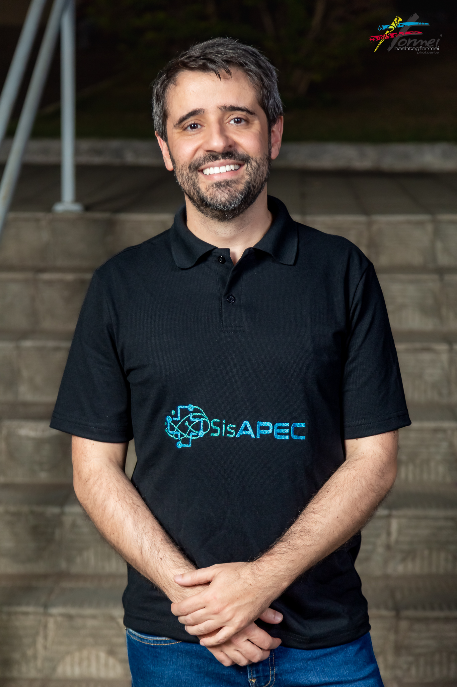
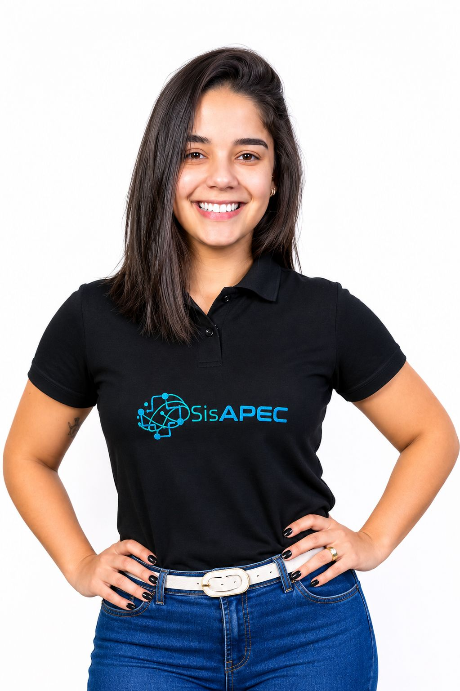
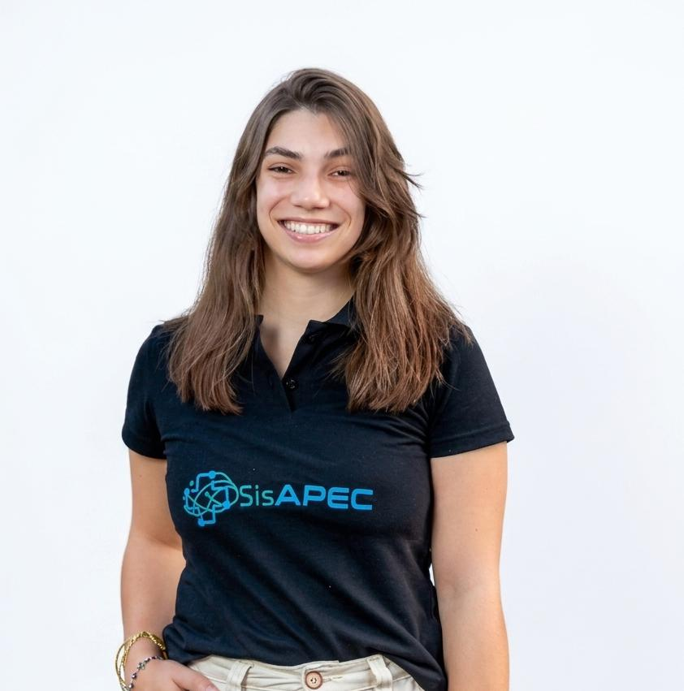
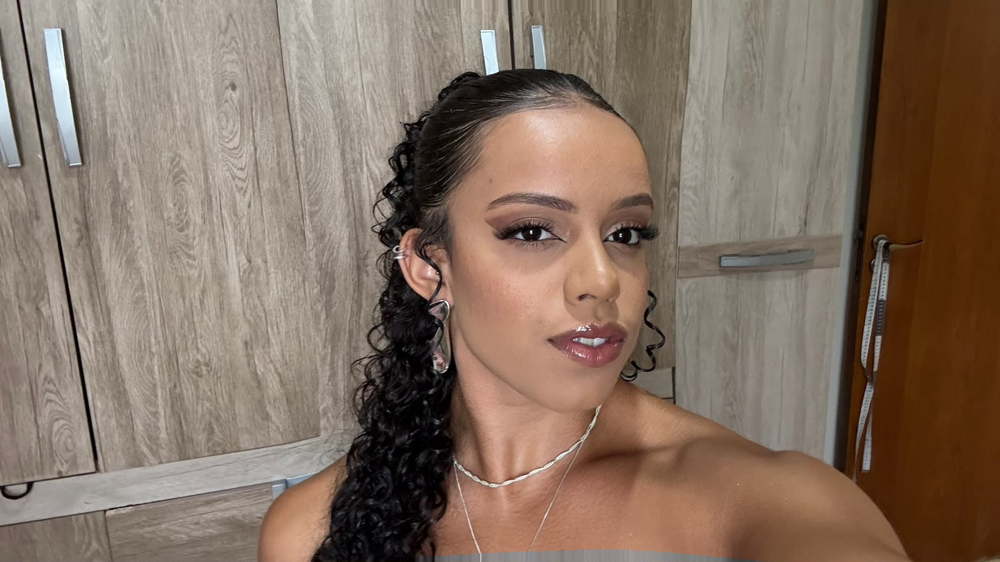
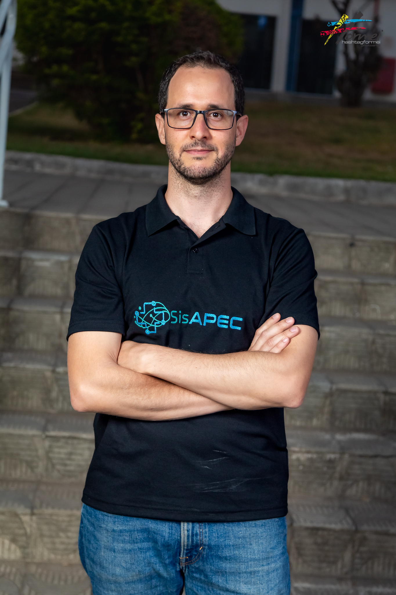
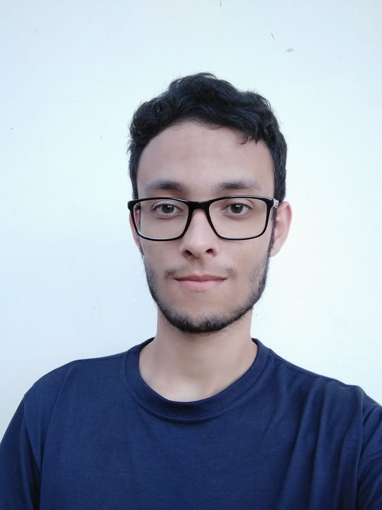
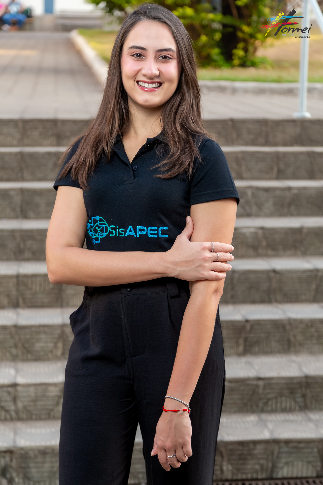

<section class="developers-section section-shell" aria-labelledby="dev-title">
  <div class="container">
    <div class="section-heading center">
      <span class="eyebrow">Equipe</span>
      <h2 id="dev-title">Desenvolvedores e pesquisadoras do SISAPEC</h2>
      <p>Equipe envolvida na concepção, pesquisa, desenvolvimento e qualificação institucional do projeto.</p>
    </div>
    <!-- EDITAR DESENVOLVEDORES: duplique um article para adicionar novas pessoas. -->
    <div class="developer-grid">
      <article class="developer-card">
        
        <h3>Isabelle Cristinne Pinto Sampaio Costa</h3>
        <p class="developer-role">Coordenação científica</p>
        <p>Atuação na orientação acadêmica, estruturação científica e articulação institucional do SISAPEC.</p>
        <a href="http://lattes.cnpq.br/1981112121402908" target="_blank" rel="noopener noreferrer">Currículo Lattes</a>
        <a href="https://mail.google.com/mail/?view=cm&fs=1&to=isabelle.costa@unifal-mg.edu.br" target="_blank" rel="noopener noreferrer">E-mail</a>
      </article>
      <article class="developer-card">
        
        <h3>Flávio Barbieri Gonzaga</h3>
        <p class="developer-role">Docente e desenvolvedor</p>
        <p>Atuação no desenvolvimento e na orientação técnica do SISAPEC.</p>
        <a href="http://lattes.cnpq.br/1310310705488241" target="_blank" rel="noopener noreferrer">Currículo Lattes</a>
      </article>
      <article class="developer-card">
        
        <h3>Anna Paula Mendes</h3>
        <p class="developer-role">Doutoranda</p>
        <p>Contribuição em pesquisa, análise do processo de cuidado e desenvolvimento científico do projeto.</p>
        <a href="http://lattes.cnpq.br/5037585493311691" target="_blank" rel="noopener noreferrer">Currículo Lattes</a>
      </article>
      <article class="developer-card">
        
        <h3>Caren Guimarães Noble</h3>
        <p class="developer-role">Mestranda em Enfermagem</p>
        <p>Participação nas atividades de pesquisa e desenvolvimento institucional do SISAPEC.</p>
        <a href="https://lattes.cnpq.br/8030478421980503" target="_blank" rel="noopener noreferrer">Currículo Lattes</a>
      </article>
      <article class="developer-card">
        
        <h3>Cecília Santos de Lima</h3>
        <p class="developer-role">Graduanda</p>
        <p>Apoio às atividades acadêmicas, comunicação e organização de materiais institucionais.</p>
        <a href="http://lattes.cnpq.br/2988772854307002" target="_blank" rel="noopener noreferrer">Currículo Lattes</a>
      </article>
      <article class="developer-card">
        
        <h3>Francini Castilha do Nascimento</h3>
        <p class="developer-role">Mestranda</p>
        <p>Apoio à produção acadêmica, validação de fluxos e qualificação das ações do SISAPEC.</p>
        <a href="http://lattes.cnpq.br/7351022040886482" target="_blank" rel="noopener noreferrer">Currículo Lattes</a>
      </article>
      <article class="developer-card">
        
        <h3>Gustavo Rodrigues</h3>
        <p class="developer-role">Discente de Ciência da Computação</p>
        <p>Atuação junto ao desenvolvimento do SISAPEC.</p>
      </article>
      <article class="developer-card">
        
        <h3>Leticia Aparecida Alves Machado</h3>
        <p class="developer-role">Graduanda</p>
        <p>Contribuição em ações de extensão, registros do projeto e apoio à documentação.</p>
        <a href="https://lattes.cnpq.br/7282642263841535" target="_blank" rel="noopener noreferrer">Currículo Lattes</a>
      </article>
      <article class="developer-card">
        
        <h3>Lucélia Terra Chini</h3>
        <p class="developer-role">Docente de Enfermagem</p>
        <p>Atuação junto às atividades acadêmicas e institucionais do SISAPEC.</p>
        <a href="http://lattes.cnpq.br/9302675982148088" target="_blank" rel="noopener noreferrer">Currículo Lattes</a>
      </article>
      <article class="developer-card">
        
        <h3>Marina Bavaresco</h3>
        <p class="developer-role">Doutoranda em Enfermagem</p>
        <p>Participação nas atividades de pesquisa e desenvolvimento institucional do SISAPEC.</p>
        <a href="http://lattes.cnpq.br/1372954577140335" target="_blank" rel="noopener noreferrer">Currículo Lattes</a>
      </article>
      <article class="developer-card">
        
        <h3>Nycole Paulino</h3>
        <p class="developer-role">Discente de Ciência da Computação</p>
        <p>Atuação junto ao desenvolvimento do SISAPEC.</p>
        <a href="https://portifolio-nycole.vercel.app/" target="_blank" rel="noopener noreferrer">Currículo Lattes</a>
      </article>
      <article class="developer-card">
        
        <h3>Tiago Silveira</h3>
        <p class="developer-role">Integrante do SISAPEC</p>
        <p>Participante da equipe vinculada às ações institucionais do SISAPEC.</p>
      </article>
      <article class="developer-card">
        
        <h3>Vinicius Bueno Bastos</h3>
        <p class="developer-role">Discente de Ciência da Computação</p>
        <p>Atuação junto ao desenvolvimento do SISAPEC.</p>
        <a href="http://lattes.cnpq.br/6274753313548015" target="_blank" rel="noopener noreferrer">Currículo Lattes</a>
      </article>
      <article class="developer-card">
        
        <h3>Yasmim Ribeiro Fracaroli</h3>
        <p class="developer-role">Mestranda</p>
        <p>Participação em pesquisas, registros técnicos e desenvolvimento das iniciativas do projeto.</p>
        <a href="http://lattes.cnpq.br/3700118928567223" target="_blank" rel="noopener noreferrer">Currículo Lattes</a>
      </article>
    </div>
  </div>
</section>
